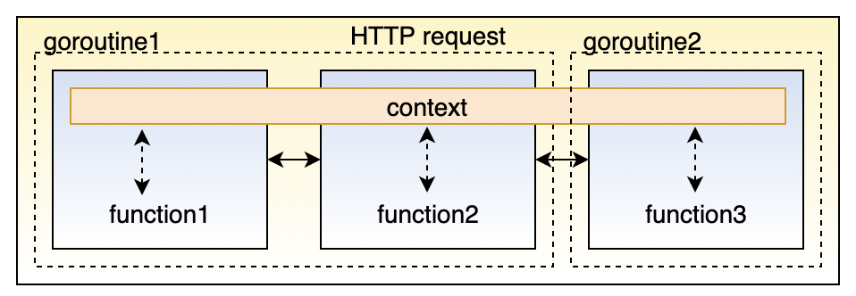
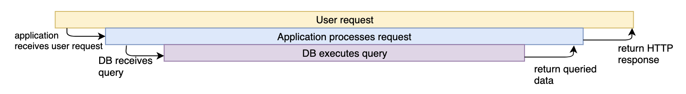
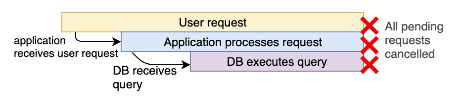

Context
1. Introduction
In Go servers, each incoming request is handled in its own goroutine. Request handlers often start additional goroutines to access backends such as databases and RPC services. The set of goroutines working on a request typically needs access to request-specific values such as the identity of the end user, authorization tokens, and the request's deadline. When a request is canceled or times out, all the goroutines working on that request should exit quickly so the system can reclaim any resources they are using.
A context package makes it easy to pass request-scoped values, cancelation signals, and deadlines across API boundaries to all the goroutines involved in handling a request.

A context package will help you in following problems:
- Let’s say that you started a function and you need to pass some common parameters to the downstream functions. You cannot pass these common parameters each as an argument to all the downstream functions.
- You started a goroutine which in turn start more goroutines and so on. Suppose the task that you were doing is no longer needed. Then how to inform all child goroutines to gracefully exit so that resources can be freed up.
- A task should be finished within a specified timeout of say 2 seconds. If not it should gracefully exit or return.
- A task should be finished within a deadline eg it should end before 5 pm. If not finished then it should gracefully exit and return.
Use cases:
- To pass data to the downstream. Eg. a HTTP request creates a
request_id,request_userwhich needs to be passed around to all downstream functions for distributed tracing. - When you want to halt the operation in the midway – A HTTP request should be stopped because the client disconnected.
- When you want to halt the operation within a specified time from start i.e with timeout – Eg- a HTTP request should be completed in 2 sec or else should be aborted.
- When you want to halt an operation before a certain time – Eg. A cron is running that needs to be aborted in 5 mins if not completed.
2. Context
The core of the context package is the Context type:
1 2 3 4 5 6 7 8 9 10 11 12 13 14 15 16 17 18 | |
3. Derived contexts
The context package provides functions to derive new Context values from existing ones. These values form a tree: when a Context is canceled, all Contexts derived from it are also canceled.
Background is the root of any Context tree; it is never canceled:
1 2 3 4 | |
TODO is a non-nil, empty Context. Code should use context.TODO when it's unclear which Context to use or it is not yet available
1 2 3 4 5 | |
A derived context is can be created in 4 ways:
1 2 3 4 5 6 7 8 9 10 11 12 13 14 15 16 17 18 19 | |
4. Context examples
We need cancellation to prevent our system from doing unnecessary work.
Consider the common situation of an HTTP server making a call to a database, and returning the queried data to the client:

The timing diagram, if everything worked perfectly, would look like this:

But, what would happen if the client cancelled the request in the middle? This could happen if, for example, the client closed their browser mid-request.
Without cancellation, the application server and database would continue to do their work, even though the result of that work would be wasted:

Ideally, we would want all downstream components of a process to halt, if we know that the process (in this example, the HTTP request) halted:

For example, lets consider an HTTP server that takes two seconds to process an event. If the request gets cancelled before that, we want to return immediately:
1 2 3 4 5 6 7 8 9 10 11 12 13 14 15 16 17 18 19 20 21 | |
An example using WithCancel context
1 2 3 4 5 6 7 8 9 10 11 12 13 14 15 16 17 18 19 20 21 22 23 24 25 26 27 28 29 30 31 32 | |
An example using WithValue context
1 2 3 4 5 6 7 8 9 10 11 12 13 14 15 16 17 18 19 20 21 22 23 24 25 26 27 28 29 30 31 32 33 34 35 | |
5. BestPractices and Caveats
- Do not store a context within a struct type
- Context should flow through your program. For example, in case of an HTTP request, a new context can be created for each incoming request which can be used to hold a request_id or put some common information in the context like currently logged in user which might be useful for that particular request.
- Always pass context as the first argument to a function.
- Whenever you are not sure whether to use the context or not, it is better to use the context.ToDo() as a placeholder.
- Only the parent goroutine or function should the cancel context. Therefore do not pass the cancelFunc to downstream goroutines or functions. Golang will allow you to pass the cancelFunc around to child goroutines but it is not a recommended practice